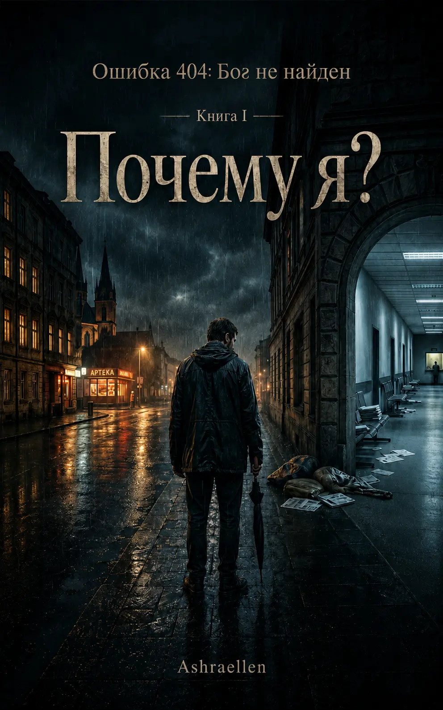

Porquê eu?
Livro I do ciclo «Erro 404: Deus não encontrado». Um romance filosófico-satírico sobre a dor, a reclamação, a fé, a burocracia da alma e a Chancelaria Celestial, que responde não às palavras do requerimento, mas a quem o apresenta.
Sobre o livro
em preparação para impressão

Livro em preparação para impressão
«Porquê eu?» é o primeiro livro do ciclo «Erro 404: Deus não encontrado». É a história de Vlad, jurista e requerente irritado contra o Universo, que tenta transformar a sua própria dor numa reclamação devidamente formalizada.
Vlad não procura a iluminação. Quer explicações. De preferência por escrito, com assinatura, carimbo, número de processo e possibilidade de recurso. Está convencido de que o sofrimento lhe dá o direito de exigir uma resposta e de que a vida tem a obrigação de reconhecer, pelo menos, uma violação do procedimento.
Mas a Chancelaria Celestial não funciona como um departamento de indemnizações. Não discute, não consola e não prova a existência de Deus. Regista o pedido, esclarece a categoria do requerimento e vai mostrando: o erro pode não estar na ausência de resposta, mas no próprio modo de procurar.
O livro avança da pergunta «porquê eu?» para uma pergunta mais desagradável e mais exata: quem é, afinal, que pergunta isto?
Tema do livro
o assunto interior do requerente
O tema central do livro é o hábito humano de transformar Deus, o destino, a vida ou a Verdade num serviço supremo de apoio ao cliente. A pessoa sofre, perde, espera, ofende-se, reza, negoceia, agradece com uma fatura emitida por dentro — e muitas vezes não repara que procura não a Verdade, mas a confirmação da sua própria versão da dor.
«Porquê eu?» investiga não a ausência de Deus, mas uma falha na forma do pedido. A pergunta pode ser verdadeira, a dor pode ser verdadeira, mas o requerente que há dentro da pessoa pode ser feito de orgulho, cansaço, papel, medo, guiões antigos e desejo de compensação.
Não é uma sátira antirreligiosa. O livro não se ri de Deus. Ri-se da tentativa humana de transformar Deus em garantia, contrato, botão de emergência, instância de reclamações e balcão oficial de entrega de sentido.
Camadas de sentido
camadas de leitura
- a dor como reclamação contra o Universo
- a Chancelaria Celestial como estado, e não como lugar
- oração, espera, gratidão e conta oculta
- a burocracia seca como espelho do pedido espiritual
- a pergunta «porquê eu?» e a destruição gradual do velho requerente
- um humor que primeiro faz rir e depois fecha com cuidado a porta por dentro
Excerto
Capítulo primeiro — Erro 404
Capítulo primeiro. Erro 404
Nessa noite, o Vlad rezou não porque acreditasse.
Isso teria sido bonito de mais.
Rezou porque todos os outros meios já tinham acabado. Primeiro acabaram os argumentos razoáveis. Depois o dinheiro. Depois as forças. Depois a habitual capacidade masculina de dizer a si próprio: «Não faz mal, vamos safar-nos», embora lá dentro já ninguém se safasse de nada há muito tempo, apenas se sentasse entre os escombros a fingir que era uma mudança temporária de mobília.
À meia-noite, o apartamento ficou em silêncio.
Não aquele bom silêncio em que descansam as pessoas de consciência limpa, renda paga e nenhuma mensagem nova do banco. Não. Era outro silêncio — pegajoso, de sentinela, quase de serviço. O que há nos corredores dos hospitais, nas escadas vazias e nas cabeças das pessoas que aguentaram demasiado tempo e agora não sabem a quem apresentar a conta.
O Vlad estava sentado na cozinha.
À sua frente havia uma chávena de chá, há muito arrefecido até ao estado de censura filosófica. Em cima da mesa estavam o telemóvel, um bloco de notas, uma caneta, algumas faturas e uma pequena cruz numa corrente fina. A cruz, não a usava. Não por princípio. Simplesmente nunca calhara. Ficava na gaveta, junto com pilhas, chaves velhas e outros objetos cujo sentido fora um dia evidente e depois morrera em silêncio.
Hoje o Vlad tirara-a de lá.
Sem saber porquê.
Talvez para reforçar o pedido.
Ou para mostrar que não vinha de mãos vazias. Como numa repartição: aqui está o requerimento, aqui os documentos, aqui as provas, aqui um pequeno objeto religioso a confirmar que o requerente tentou colaborar com o sistema.
As pessoas têm uma lógica estranha nos momentos de desespero. Enquanto tudo é mais ou menos suportável, discorrem sobre o livre-arbítrio, a maturidade, os limites psicológicos e a necessidade de assumir responsabilidades. Mas basta a vida pôr-lhes com jeito um joelho no peito para que de repente se lembrem de todos os antigos protocolos de comunicação: velas, cruzes, orações, promessas, ameaças, regateio, lágrimas, «Senhor, por favor» e outras formas de assistência técnica espiritual.
O Vlad olhou para a cruz.
Depois para as faturas.
Depois outra vez para a cruz.
A cruz parecia mais honesta.
As faturas também, mas noutro sentido.
Suspirou e passou a palma da mão pela cara. A cara estava cansada. Não velha, não quebrada, não trágica — apenas a cara de um homem que durante demasiado tempo explicou a si próprio que tudo corria normalmente e por fim deixou de acreditar em si.
— Então — disse para o vazio. — Vamos lá a falar como adultos.
O vazio não objetou.
Era um bom sinal. Ou mau. Com o vazio é, em geral, difícil manter correspondência: raramente esclarece a sua posição.
O Vlad não sabia nenhuma oração por inteiro. Na infância ouvira qualquer coisa. Depois vira em filmes. Depois estivera um par de vezes numa igreja, onde todos à volta faziam com segurança movimentos cujo sentido lhe era tão claro quanto as definições de uma máquina industrial em japonês.
Benzeu-se.
Sem jeito.
Depressa de mais.
Depois mais uma vez, mais devagar, para não parecer por completo o gesto de um utilizador desesperado diante de um computador bloqueado.
— Senhor — disse.
E calou-se.
A palavra revelou-se mais pesada do que esperava. Não elevada, não luminosa, não solene. Simplesmente pesada. Como se tivesse chamado pelo nome alguém a quem escrevia há demasiado tempo e agora aparecesse de repente não com amor, mas com uma reclamação.
Esboçou um sorriso torto.
— Que bela maneira de começar. Maturidade espiritual em estado puro. Logo com uma queixa.
Queria dizer algo certo. Algo nobre. Por exemplo: «Seja feita a Tua vontade». Ou: «Ensina-me a aceitar». Ou: «Indica-me o caminho».
Mas por dentro ergueu-se algo completamente diferente.
Não uma oração.
Antes um requerimento.
Nem sequer um requerimento — uma reclamação.
E quanto mais tempo se calava, mais claro lhe ficava: se agora começasse a falar bonito, mentiria desde a primeira palavra. E estava cansado de mentir. Sobretudo para o sítio onde, em princípio, de qualquer maneira tudo se vê.
— Tentei viver como deve ser — disse por fim.
A frase soou lastimosa.
Fez uma careta.
— Não, assim não.
Levantou-se, deu uma volta pela cozinha, regressou, sentou-se outra vez.
— Tentei viver como deve ser. Aguentei. Esforcei-me. Fingi que percebia. Até me benzi.
Olhou para a cruz em cima da mesa.
Estava ali calada e não ajudava em nada.
— E agora expliquem-me, por favor: porque é que nada disto funciona?
Depois destas palavras, fez-se um grande silêncio.
Até o frigorífico, que normalmente zumbia com a teimosia de um velho profeta, se calou por alguns segundos. Lá fora passou um carro. Algures lá em cima alguém deixou cair uma coisa pesada e depois disse uma palavra curta, não destinada a uso litúrgico.
O Vlad esperou.
Não sabia exatamente o quê.
Uma voz do céu? Luz? Um sinal? Calor interior? Aquela mesma sensação sobre a qual escrevem pessoas que sobreviveram ao encontro com o superior e depois, por alguma razão, vendem um curso por noventa e nove euros?
Não aconteceu nada.
Naturalmente.
Esboçou um sorriso torto.
— Pois. Foi o que pensei.
Recostou-se na cadeira e sentiu a raiva regressar ao seu lugar legítimo.
— Magnífico — disse, já mais alto. — Ou seja, sofrer — faça favor. Aguentar — faça favor. Fingir que tudo tem sentido — faça favor. Mas, mal é preciso uma resposta, logo silêncio. Muito conveniente.
O vazio voltou a não objetar.
— Eu, já agora, não peço milagres — disse o Vlad. — Já não peço. Só quero perceber com que lógica é que isto tudo funciona. Ou, pelo menos, quem é aqui o responsável pela qualidade do atendimento.
Ouviu como aquilo soava e fez uma careta.
Mas já não lhe apetecia parar.
— Pago por esta vida com o meu sofrimento. Alguém me pode passar um recibo?
E nesse instante o telemóvel em cima da mesa vibrou.
O Vlad estremeceu tão bruscamente que quase derrubou a chávena. O ecrã acendeu-se.
Nova notificação.
Remetente não identificado.
Assunto: Resposta ao requerimento
O Vlad ficou alguns segundos a olhar para o ecrã.
Depois levantou os olhos para o teto.
— A sério?
O teto era normal. Branco, com uma pequena fenda junto ao candeeiro. Sem anjos. Sem trombetas. Sem esplendor. Só a fenda, parecida com um rio fino que há muito decidira abandonar primeiro aquele apartamento.
O telemóvel vibrou outra vez.
No ecrã apareceu uma mensagem:
O seu pedido foi registado.
O Vlad não se mexeu.
Leu a linha uma vez.
Depois uma segunda.
Depois uma terceira, já mais devagar, como se a velocidade da leitura pudesse mudar o conteúdo.
Mais abaixo apareceu a linha seguinte:
Número do processo: 777-404-13.
Piscou os olhos.
— Não.
O telemóvel, pelos vistos, discordou, porque a mensagem continuou:
Por favor, não crie pedidos repetidos.
Isso não acelerará a verificação dos algoritmos da sua alma.O Vlad pousou o telemóvel.
Depois voltou a pegar nele.
Depois voltou a pousá-lo.
Levantou-se.
Sentou-se.
Olhou para o chá.
O chá, como toda a testemunha honesta, não explicou nada.
— Muito bem — disse o Vlad. — Ou isto é um esgotamento nervoso, ou spam de um novo nível.
Pegou no telemóvel e carregou na notificação.
O ecrã apagou-se por um instante.
Depois ficou branco.
No meio apareceu uma inscrição:
Erro 404: Deus não encontrado
Por baixo, em letra miúda:
Causas possíveis:
1. Endereço do pedido incorreto.
2. Pedido dirigido ao destinatário errado.
3. O utilizador procura Deus fora da zona de acesso interior.
4. O sujeito requerente exige uma resposta sem confirmar a sua própria existência.O Vlad sentiu tudo gelar-se por dentro.
Não de medo.
Precisamente de frio.
É o que acontece quando a realidade de repente dá um passo para o lado e tu vês que atrás dela não há parede. Só uma passagem de serviço, mal iluminada, com uma tabuleta: «Entrada permitida a estranhos, mas vão arrepender-se».
Pousou devagar o telemóvel em cima da mesa.
— O que quer dizer «sem confirmar a sua própria existência»?
O telemóvel respondeu de imediato.
Para continuar, selecione a categoria do pedido:
1. Dor.
2. Injustiça.
3. Porquê eu?
4. Porque é que outra vez eu?
5. Percebi tudo, mas pode ser sem consequências?
6. Outro.O Vlad fechou os olhos.
Abriu-os.
As opções não desapareceram.
Beliscou-se no braço.
Doeu.
Quer dizer, ou não era um sonho, ou era um sonho com boa definição.
— E se eu não quiser escolher?
No ecrã surgiu uma nova linha:
A recusa em escolher também será registada como escolha.
O Vlad riu-se baixinho.
O riso saiu mau. Seco. Curto. É o riso das pessoas a quem acabam de comunicar que a sua tragédia pessoal se encaixa na perfeição num procedimento administrativo geral.
— Magnífico — disse. — Até Deus tem burocracia.
A resposta veio instantânea:
A burocracia foi criada pelos humanos.
Nós somos apenas obrigados a usar uma interface que vocês compreendam.O Vlad deixou de rir.
Excerto autêntico do primeiro capítulo. Escolhido como entrada no livro: aqui surgem pela primeira vez a reclamação, a resposta ao requerimento e a interface seca da Chancelaria Celestial.
 — mark of presence
— mark of presence